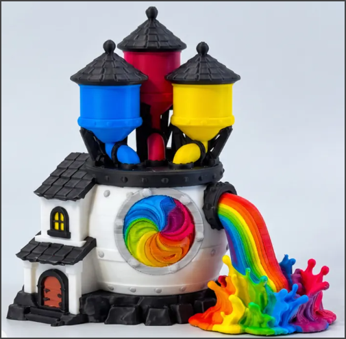
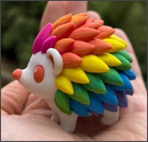
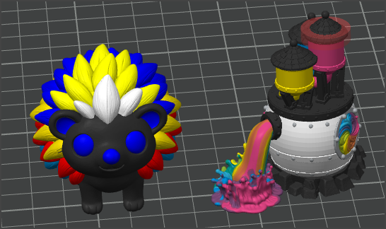
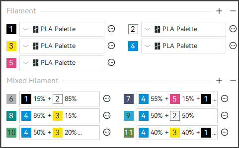
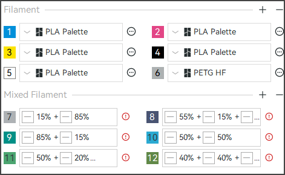
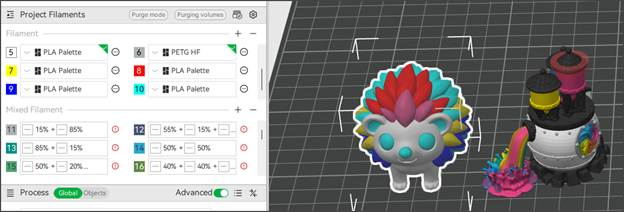
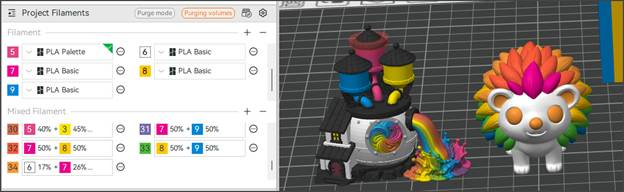

I had a problem.� I my new Bambu Labs H3C, I wanted to print both of these models at the same time.
The Color Factory - Full Spectrum - Free 3D Print Model - MakerWorld

Color Mixing Tester - Punk Hedgehog - Free 3D Print Model - MakerWorld

Because printing them at the same time would save 4 hours of print time and 30 grams of filament. (I scaled the factory down to the same size as the hedgehog.)
The trouble was, any time I tried to combine them in Bambu Studio, the colors of one or both would get messed up.

I thought I could correct the Filaments into the same CMYKW order before merging, but to do that I had to manually correct all of the Mixed Filaments


Even after correcting both into CMYKW order and resolving each set of Mixed Filaments, the merging didn�t go well.

With the help of Github Copilot, I created the merge_3mf.py python script to read the color indexes in each file and keep them from conflicting into a new output file.
So far, I�ve only tested it on these two models. Use at your own risk.

See the readme.md file for more information and instructions.